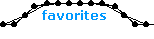
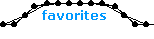

|
 |
name: TriangleQ
by: Kevino
genre: amoeba/flex
comments: This model really blew me away when I first saw it. It introduced me to flex structures and required me to develop dissection skills to understand it. I made a series of models in tribute and credited Kevino in each of their names, but none equal the original's geometric simplicity. |
|
 |
name: triplehelix
by: mono
genre: other/flex
comments: The complexity of this model's construction and programming was incomprehensible to me when I first encountered it. I particularly like how it seems 3 dimensional. One interesting feature is that its program divides the wave pallet into ninths, which is very rare. |
|
 |
name: Burning_the_ground
by: Jeckyll
genre: walker
comments: Every once in a while, you click on one of those zoo icons and a model appears that is so good it hurts. This is one of them. Everything about this model, its style, construction, programming, sheer mass, is daunting. It's best not to think about how he did it, just enjoy it. |
|
 |
name: biped_study_06
by: lonelyswedish
genre: walker/flex
comments: While lonelyswedish is known for his intricate 4 legged walkers, this simple and elegant biped really caught my eye. It moves in a manner that I wouldn't have thought possible. To have designed a biped like this shows great versatility because its so different from his other work. |
|
 |
name: AccordianStyle
by: Lectvay
genre: walker
comments: Lectvay worked quite hard, experimenting with different structures and supports, to give this model its appearance. The result looks very menacing and is just fantastic. Notice that instead of internal braces, regular springs at the end of each leg keep the whole structure rigid. |
|
 |
name: soft_lines
by: mono
genre: zero-g/flex
comments: This is one of the best examples of how organic flex structures can appear. Even the programming animates this shape in a lively way. It is a testament to life that something so formless and asymmetrical can be so beautiful. I imagine that it is a protein or DNA sequence replicating itself. |


 
